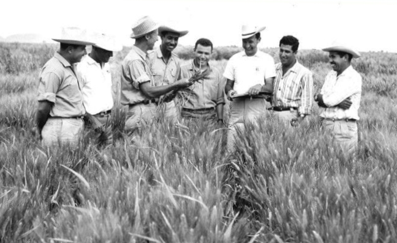

Dr.Norman Borlaug
The man who saved a billion lives

Dr.Norman Borlaug, third from the left, trains biologists in Mexico on how to increase wheat yields-part
of his life-long war on hunger.
Here's a time line of Dr.Borlaug's life:
-
1914 - Born in Cresco,lowa.
-
1933 - Leaves his family's farm to attend the University of Minnesota,
thanks to a Depression era program known as the "National
Administration".
-
1935 - Has to step school and save up more money. Works in the Civilian
Conservation Crops, helping satrving Americans. "I saw food changed